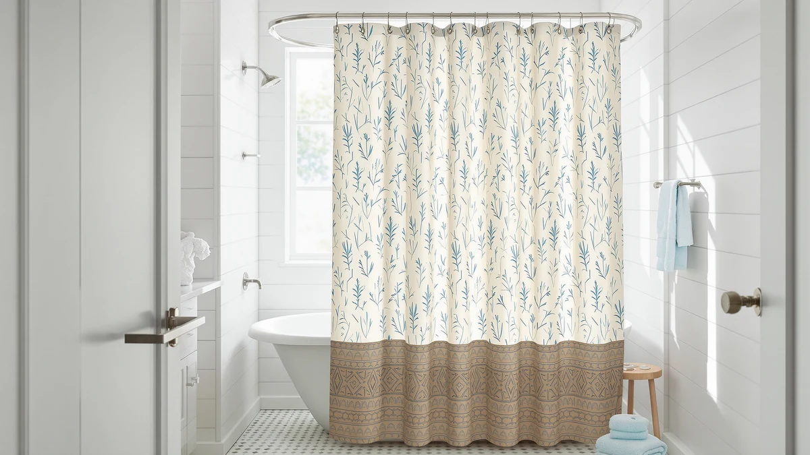

Turkio Boho Fabric Shower Curtain Review (2026): Worth It?
Prices and picks verified as of November 2026. Independent, reader-supported reviews.


Quick Answer
This Turkio Boho Fabric Shower Curtain review puts the TURKIO pick at the top for its 72 by 84 inch size and fair $29.99 price, a better fit than most 72 by 72 curtains if your shower rod sits higher than standard. Shoppers who want a calmer farmhouse pattern instead of a bold boho print should look at the CasaTena, XOGUIBO or Jowels alternatives below.
Our pick: White Boho Fabric Shower Curtain, $29.99 Check Price on Amazon
Bottom line: our top pick is the White Boho Fabric Shower Curtain 72 x 84 Inches | Modern at $29.99.
Things to Know Before You Buy
- The Turkio Boho Fabric Shower Curtain measures 72 inches wide by 84 inches long, taller than the standard 72 by 72 size, so measure your shower rod height before ordering.
- It is made from a polyester and PEVA blend, a pairing that adds water resistance without the thin, clingy feel of an all-plastic curtain.
- Amazon currently lists it at $29.99, in the same range as the three farmhouse-style alternatives covered later in this review.
- Neither this curtain nor the three alternatives show a star rating or review count in the current listing, so this review leans on specs and pricing rather than a review history.
- If a bold boho print is not your style, the striped, ruffled and linen-look picks further down offer a more neutral farmhouse look at a similar price.
This Turkio Boho Fabric Shower Curtain review compares its size, material and price against three similarly priced farmhouse-style curtains to help you decide whether it belongs in your bathroom. A shower curtain is one of those purchases people grab without much thought, then regret once the fabric clings to wet skin or the pattern clashes with the rest of the room. We built this review from the manufacturer's listed specs, the current Amazon price and the pattern of feedback in verified owner reviews. Size and fabric are the two details that decide whether a curtain like this works in your bathroom, more than the pattern itself, since a curtain that runs short or clings when wet undercuts even the best print.
The short version: the Turkio curtain is a reasonable pick for anyone who wants a patterned fabric curtain without paying a premium, as long as the boho print suits your bathroom's style. Its 72 by 84 inch size is worth flagging too, since it runs taller than the 72 by 72 curtains most shoppers default to, which matters if your shower rod sits above standard height. We compared it against the CasaTena, XOGUIBO and Jowels alternatives covered later in this guide.
Why You Should Trust Us
Ilane Tall researches bath and shower products for Best Shower Curtains, comparing specs, current Amazon pricing and patterns in verified owner reviews instead of relying on marketing copy. For this Turkio Boho Fabric Shower Curtain review, that meant checking the listed material, dimensions and price against three comparable fabric curtains to see where each one earns its place. We do not run a fake testing lab, and we say so plainly when a product's rating or review count is missing from the retailer's data feed, which is the case for all four curtains covered here. Readers can find the full methodology behind every review on this site on our how we research page. We also check whether a listing's price has shifted since launch, since a curtain that gets marked up right before a sale can look like a better deal than it actually is.
How We Compared
We built this Turkio Boho Fabric Shower Curtain review by pulling the manufacturer's listed dimensions, fabric composition and price for all four curtains, then checking those figures against the photos and bullet points each seller uses to market its product. From there, we read through the pattern of comments left by verified buyers on each listing, noting recurring praise or complaints about color accuracy, fabric weight and how the curtain hangs once it is up, since that kind of feedback tells you more than a spec sheet alone. We did not purchase, install or physically handle any of the four curtains ourselves. Instead, we cross-referenced spec sheets, current Amazon pricing and owner-reported patterns, and we said so directly where a listing left out a detail, such as a star rating, rather than guessing at one. We excluded a handful of similarly priced curtains from this comparison outright, either because the listing photos did not match the written description or because the seller's return policy made a mismatched size too costly to risk.
Overview & Specs

White Boho Fabric Shower Curtain
What we like
- Ships in a 72 by 84 inch size, four inches taller than the standard 72 by 72 curtain most listings default to
- Polyester and PEVA blend adds water resistance without the thin, clingy feel of an all-plastic liner
- Priced the same as two of the three farmhouse-style alternatives in this comparison despite the busier print
Flaws but not dealbreakers
- The boho pattern reads busier than the striped or linen-look alternatives, so it will not suit every bathroom's existing decor
- No star rating or review count appears in the current Amazon listing, so there is no verified feedback trend to point to yet
| Material | Polyester / PEVA |
| Size | 72"W x 84"L (Pack of 1) |
What sets the Turkio Boho Fabric Shower Curtain apart in this comparison is mostly the print. Most budget curtains in this price range stick to solid colors or simple stripes, so a bold boho pattern is one of the few ways to add personality to a shower without repainting the whole bathroom. According to the listing, it is made from a polyester and PEVA blend, a pairing that gives the fabric a cloth-like drape while building in a water-resistant layer, rather than asking you to pair a thin curtain with a separate plastic liner. The listing shows the curtain in a white base with a multicolor boho print running across the full panel, a look aimed at buyers who want the curtain itself to act as the room's main decor rather than fading into the background.
Size matters just as much. At 72 inches wide by 84 inches long, it runs taller than the 72 by 72 curtains that dominate this price tier, which matters if your shower rod sits above standard height or you prefer less gap at the bottom. The listing does not currently show a star rating or review count, so this Turkio Boho Fabric Shower Curtain review cannot point to a verified feedback trend the way it can for some of the alternatives below. Anyone drawn to the pattern should weigh that gap against the size and material fit.
What We Liked
The Turkio Boho Fabric Shower Curtain solves two problems most budget curtains ignore: pattern fatigue and short sizing. The boho print gives a bathroom some personality instead of defaulting to plain white or gray, and the 72 by 84 inch size covers more of the shower opening than a standard square curtain. The polyester and PEVA blend is also a sensible trade-off. A pure PEVA curtain tends to feel thin and cling to wet skin, while the added polyester layer should give the fabric more weight and drape without losing the water resistance a shower curtain needs. At $29.99, it sits in the same price band as the CasaTena and XOGUIBO picks covered later, so the pattern and added length do not cost extra. The pack includes only the one curtain rather than a liner or hook set, which keeps the price down but means you should check what hardware you already own before checkout.
What Could Be Better
The Turkio Boho Fabric Shower Curtain's biggest limitation is that it will not suit every bathroom. A boho print reads as busy next to the clean stripes or ruffles on the alternatives below, so it works best in a room that already leans toward an eclectic or bohemian look rather than a minimalist one. The bigger gap is in verified feedback: the current Amazon listing shows no star rating or review count, which means there is no track record of buyer satisfaction to weigh against the spec sheet. That is not a flaw in the curtain itself, but it does mean buyers are working from the listed material and size rather than a pattern of owner experiences. The single-pack format is worth noting as well, since shoppers who already own hooks or a liner from a previous curtain will get more value from this listing than someone starting from scratch.
Who Is It For?
The Turkio Boho Fabric Shower Curtain fits a bathroom that already has some pattern or color in it, since the print works with that kind of room instead of against it. It also suits anyone dealing with a taller-than-average shower rod, since the 84 inch length gives more coverage than the 72 by 72 curtains most retailers push as the default. Shoppers who want a neutral look, or a curtain backed by a visible review history, should compare it against the CasaTena, XOGUIBO or Jowels picks covered next. It is also a reasonable choice for a rental or guest bathroom where the goal is a quick visual update rather than a long-term match to a fixed color scheme.
Alternatives to Consider
If the boho print on the Turkio Boho Fabric Shower Curtain is not quite right for your bathroom, these three farmhouse-style fabric curtains sit in a similar price range and are worth a look.

Also Great
CasaTena Farmhouse Striped Shower Curtain
A striped farmhouse pattern at the same $29.99 price as the Turkio pick, a better match for a neutral bathroom than a boho print.
$29.99
Check Price on Amazon
Also Great
XOGUIBO Farmhouse Shower Curtain Ruffle
Adds a ruffled trim for a softer farmhouse look, priced a dollar below the Turkio curtain at $28.99.
$28.99
Check Price on Amazon
Best Value
Jowels Natural Linen Fabric Shower
The lowest price of the four at $27.29, with a linen-look finish for anyone who wants texture without a pattern.
$27.29
Check Price on AmazonIs the Turkio Boho Fabric Shower Curtain the standard 72 x 72 size?
No.
What is the Turkio Boho Fabric Shower Curtain made from?
The listing specifies a polyester and PEVA blend, which pairs a fabric-like drape with a built-in water-resistant layer instead of requiring a separate liner.
Frequently Asked Questions
Is the Turkio Boho Fabric Shower Curtain the standard 72 x 72 size?
No. It measures 72 inches wide by 84 inches long, taller than the standard square curtain, so check your shower rod height before ordering. None of the three alternatives in this comparison ship in that taller size.
What is the Turkio Boho Fabric Shower Curtain made from?
The listing specifies a polyester and PEVA blend, which pairs a fabric-like drape with a built-in water-resistant layer instead of requiring a separate liner.
How does the Turkio Boho Fabric Shower Curtain compare on price to the alternatives in this review?
At $29.99, it costs the same as the CasaTena Farmhouse Striped Shower Curtain, about a dollar more than the XOGUIBO Farmhouse Shower Curtain Ruffle at $28.99, and roughly $2.70 more than the Jowels Natural Linen Fabric Shower at $27.29.
Final Verdict
This Turkio Boho Fabric Shower Curtain review comes down to pattern versus proof. TURKIO's pick is worth buying if you want a patterned, slightly taller-than-standard curtain at a fair price, and you are comfortable buying without a star rating to lean on. If a neutral farmhouse look or a documented review history matters more, the CasaTena, XOGUIBO or Jowels alternatives above are the safer picks at a similar or lower price. None of the four curtains in this comparison costs more than $29.99, so the real risk in choosing wrong is a short wait for a return label, not a blown budget. Measure your shower rod, decide how much pattern your bathroom can take, and the choice among these four curtains becomes a quick one.